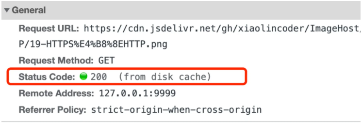
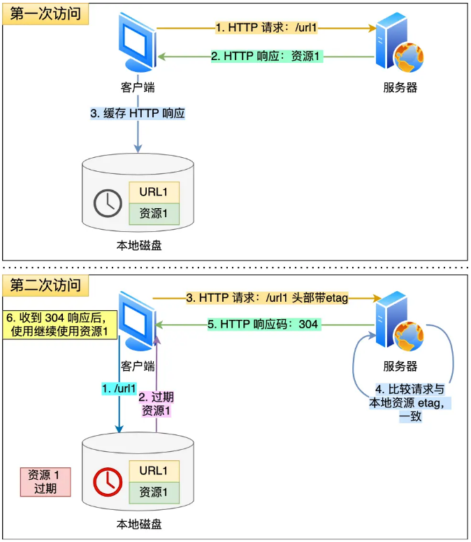
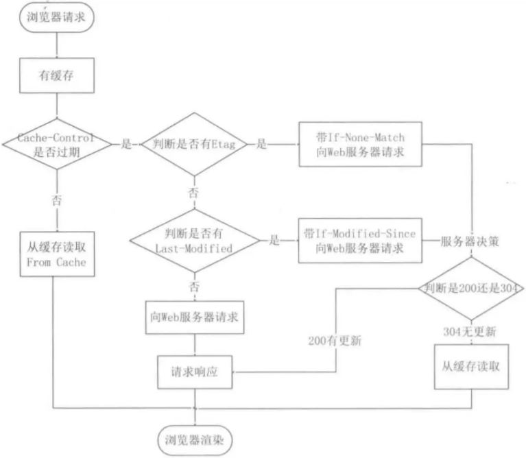

首页 > 编程笔记
对HTTP缓存机制的理解
对于一些具有重复性的 HTTP 请求，比如每次请求得到的数据都一样的，我们可以把这对「请求-响应」的数据都缓存在本地，那么下次就直接读取本地的数据，不必在通过网络获取服务器的响应了，这样的话 HTTP/1.1 的性能肯定肉眼可见的提升。
所以，避免发送 HTTP 请求的方法就是通过缓存技术，HTTP 设计者早在之前就考虑到了这点，因此 HTTP 协议的头部有不少是针对缓存的字段。
HTTP 缓存有两种实现方式，分别是「强制缓存」和「协商缓存」。
如下图中，返回的是 200 状态码，但在 size 项中标识的是 from disk cache，就是使用了强制缓存。
强缓存是利用下面这两个 HTTP 响应头部（Response Header）字段实现的，它们都用来表示资源在客户端缓存的有效期：
如果 HTTP 响应头部同时有 Cache-Control 和 Expires 字段的话，Cache-Control 的优先级高于 Expires 。
Cache-control 选项更多一些，设置更加精细，所以建议使用 Cache-Control 来实现强缓存。
具体的实现流程如下：
上图就是一个协商缓存的过程，所以协商缓存就是与服务端协商之后，通过协商结果来判断是否使用本地缓存。
协商缓存可以基于两种头部来实现。
第一种实现方式是基于时间实现的，第二种实现方式是基于一个唯一标识实现的，相对来说后者可以更加准确地判断文件内容是否被修改，避免由于时间篡改导致的不可靠问题。
如果在第一次请求资源的时候，服务端返回的 HTTP 响应头部同时有 Etag 和 Last-Modified 字段，那么客户端再下一次请求的时候，如果带上了 ETag 和 Last-Modified 字段信息给服务端，这时 Etag 的优先级更高，也就是服务端先会判断 Etag 是否变化了：
为什么 ETag 的优先级更高？
这是因为 ETag 主要能解决 Last-Modified 几个比较难以解决的问题：
注意，协商缓存这两个字段都需要配合强制缓存中 Cache-Control 字段来使用，只有在未能命中强制缓存的时候，才能发起带有协商缓存字段的请求。
下图是强制缓存和协商缓存的工作流程：
当使用 ETag 字段实现的协商缓存的过程：
所以，避免发送 HTTP 请求的方法就是通过缓存技术，HTTP 设计者早在之前就考虑到了这点，因此 HTTP 协议的头部有不少是针对缓存的字段。
HTTP 缓存有两种实现方式，分别是「强制缓存」和「协商缓存」。
HTTP 强制缓存
强缓存指的是只要浏览器判断缓存没有过期，则直接使用浏览器的本地缓存，决定是否使用缓存的主动性在于浏览器这边。如下图中，返回的是 200 状态码，但在 size 项中标识的是 from disk cache，就是使用了强制缓存。

强缓存是利用下面这两个 HTTP 响应头部（Response Header）字段实现的，它们都用来表示资源在客户端缓存的有效期：
- Cache-Control 是一个相对时间；
- Expires 是一个绝对时间。
如果 HTTP 响应头部同时有 Cache-Control 和 Expires 字段的话，Cache-Control 的优先级高于 Expires 。
Cache-control 选项更多一些，设置更加精细，所以建议使用 Cache-Control 来实现强缓存。
具体的实现流程如下：
- 当浏览器第一次请求访问服务器资源时，服务器会在返回这个资源的同时，在 Response 头部加上 Cache-Control，Cache-Control 中设置了过期时间大小；
- 浏览器再次请求访问服务器中的该资源时，会先通过请求资源的时间与 Cache-Control 中设置的过期时间大小，来计算出该资源是否过期，如果没有，则使用该缓存，否则重新请求服务器；
- 服务器再次收到请求后，会再次更新 Response 头部的 Cache-Control。
HTTP 协商缓存
当我们在浏览器使用开发者工具的时候，你可能会看到过某些请求的响应码是 304，这个是告诉浏览器可以使用本地缓存的资源，通常这种通过服务端告知客户端是否可以使用缓存的方式被称为协商缓存。

上图就是一个协商缓存的过程，所以协商缓存就是与服务端协商之后，通过协商结果来判断是否使用本地缓存。
协商缓存可以基于两种头部来实现。
第一种
请求头部中的 If-Modified-Since 字段与响应头部中的 Last-Modified 字段实现，这两个字段的意思是：- 响应头部中的 Last-Modified：标示这个响应资源的最后修改时间；
-
请求头部中的 If-Modified-Since：当资源过期了，发现响应头中具有 Last-Modified 声明，则再次发起请求的时候带上 Last-Modified 的时间，服务器收到请求后发现有 If-Modified-Since 则与被请求资源的最后修改时间进行对比（Last-Modified）：
- 如果最后修改时间较新（大），说明资源又被改过，则返回最新资源，HTTP 200 OK；
- 如果最后修改时间较旧（小），说明资源无新修改，响应 HTTP 304 走缓存。
第二种
请求头部中的 If-None-Match 字段与响应头部中的 ETag 字段，这两个字段的意思是：- 响应头部中 Etag：唯一标识响应资源；
- 请求头部中的 If-None-Match：当资源过期时，浏览器发现响应头里有 Etag，则再次向服务器发起请求时，会将请求头 If-None-Match 值设置为 Etag 的值。服务器收到请求后进行比对，如果资源没有变化返回 304，如果资源变化了返回 200。
第一种实现方式是基于时间实现的，第二种实现方式是基于一个唯一标识实现的，相对来说后者可以更加准确地判断文件内容是否被修改，避免由于时间篡改导致的不可靠问题。
如果在第一次请求资源的时候，服务端返回的 HTTP 响应头部同时有 Etag 和 Last-Modified 字段，那么客户端再下一次请求的时候，如果带上了 ETag 和 Last-Modified 字段信息给服务端，这时 Etag 的优先级更高，也就是服务端先会判断 Etag 是否变化了：
- 如果 Etag 有变化就不用在判断 Last-Modified 了；
- 如果 Etag 没有变化，然后再看 Last-Modified。
为什么 ETag 的优先级更高？
这是因为 ETag 主要能解决 Last-Modified 几个比较难以解决的问题：
- 在没有修改文件内容情况下文件的最后修改时间可能也会改变，这会导致客户端认为这文件被改动了，从而重新请求；
- 可能有些文件是在秒级以内修改的，If-Modified-Since 能检查到的粒度是秒级的，使用 Etag就能够保证这种需求下客户端在 1 秒内能刷新多次；
- 有些服务器不能精确获取文件的最后修改时间。
注意，协商缓存这两个字段都需要配合强制缓存中 Cache-Control 字段来使用，只有在未能命中强制缓存的时候，才能发起带有协商缓存字段的请求。
下图是强制缓存和协商缓存的工作流程：

当使用 ETag 字段实现的协商缓存的过程：
- 当浏览器第一次请求访问服务器资源时，服务器会在返回这个资源的同时，在 Response 头部加上 ETag 唯一标识，这个唯一标识的值是根据当前请求的资源生成的。
-
当浏览器再次请求访问服务器中的该资源时，首先会先检查强制缓存是否过期：
- 如果没有过期，则直接使用本地缓存；
- 如果缓存过期了，会在 Request 头部加上 If-None-Match 字段，该字段的值就是 ETag 唯一标识。
-
服务器再次收到请求后，会根据请求中的 If-None-Match 值与当前请求的资源生成的唯一标识进行比较：
- 如果值相等，则返回 304 Not Modified，不会返回资源；
- 如果不相等，则返回 200 状态码和返回资源，并在 Response 头部加上新的 ETag 唯一标识。
- 如果浏览器收到 304 的请求响应状态码，则会从本地缓存中加载资源，否则更新资源。
关注公众号「站长严长生」，在手机上阅读所有教程，随时随地都能学习。内含一款搜索神器，免费下载全网书籍和视频。

微信扫码关注公众号